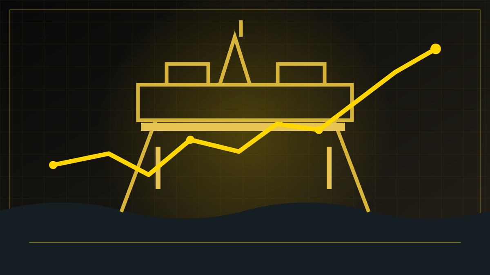

REDAKSJONELT UTKAST – IKKE PUBLISERT
Økonomi · Nyheter · 28. oktober 2026
Høyere olje- og gasspriser løftet Equinors resultat
Equinor rapporterte et justert driftsresultat på 12,35 milliarder dollar i tredje kvartal 2026, nær dobbelt så høyt som året før. Nettoresultatet var 2,54 milliarder dollar. Høyere olje- og gasspriser og sterk produksjon trakk resultatet opp.

Et sterkt kvartal
Equinor presenterte onsdag 28. oktober resultatene for tredje kvartal 2026. Det justerte driftsresultatet var 12,35 milliarder amerikanske dollar. Selskapet opplyser at det rapporterte driftsresultatet var 11,95 milliarder dollar, mens nettoresultatet var 2,54 milliarder dollar.
Forskjellen mellom disse tallene er viktig. Justert driftsresultat er et alternativt resultatmål som selskapet bruker for å sammenligne løpende virksomhet, mens rapportert driftsresultat og nettoresultat følger andre beregningsregler. Nettoresultatet omfatter blant annet skatt og finansielle poster. Ingen av tallene er det samme som utbyttet til aksjonærene. Equinor oppga også justert nettoresultat på 2,86 milliarder dollar.
Prisene driver inntektene
Selskapet peker på høyere priser på olje og andre flytende petroleumsprodukter samt europeisk gass som sentrale forklaringer. Equinor oppnådde i kvartalet en gjennomsnittlig pris på 92,3 dollar per fat for væskeproduksjonen og 20,0 dollar per million britiske varmeenheter (mmbtu) for europeisk gass. Også sterke raffineringsmarginer bidro til driftsresultatet.
Justert driftsresultat steg fra 6,215 milliarder dollar i tredje kvartal 2025 til 12,353 milliarder i tredje kvartal 2026. Det rapporterte driftsresultatet økte fra 5,27 milliarder til 11,95 milliarder dollar i samme periode. Disse tallene kommer fra ulike resultatmål og må ikke blandes sammen.
Equinor produserte i gjennomsnitt 2,166 millioner fat oljeekvivalenter per dag, om lag to prosent mer enn året før. Selskapet oppjusterte forventet produksjonsvekst for 2026 fra tre til rundt fire prosent. Det er en prognose, ikke et ferdig årsresultat.
Godt resultat for selskapet – dyrere energi for andre
Høye olje- og gasspriser slår ulikt ut. For en produsent som Equinor kan de øke inntektene betydelig. For husholdninger, bedrifter og land som kjøper energi, kan de samme prisene være en økonomisk belastning. Hvor sterk virkningen blir, avhenger blant annet av avtaler, skatter, støtteordninger og hvordan energiprisene utvikler seg videre.
Å beskrive disse forskjellene er ikke det samme som å konkludere med hvordan energipolitikken bør være. Det er derimot en del av forklaringen på hvorfor ett og samme marked kan gi både svært gode selskapsresultater og press på andre deler av økonomien.
Utbytte og tilbakekjøp
Styret har besluttet et kontantutbytte på 0,39 dollar per aksje for tredje kvartal. Equinors varslede tilbakekjøpsprogram for hele 2026 er på inntil tre milliarder dollar. Den fjerde og siste delen av programmet, på inntil 1,125 milliarder dollar, ble varslet startet 29. oktober. Beløpene omfatter også aksjer som skal innløses fra den norske staten.
Kontantstrøm fra drift etter betalt skatt, slik selskapet selv beregner den, var 8,14 milliarder dollar. Det må ikke forveksles med nettoresultat eller midler som automatisk utbetales til aksjonærene.
Neste spørsmål er hvor varig prisnivået blir, og hvordan investerings- og produksjonsplaner påvirkes. Kvartalsrapporten dokumenterer selskapets situasjon i tredje kvartal, men er ingen garanti for framtidige inntekter.